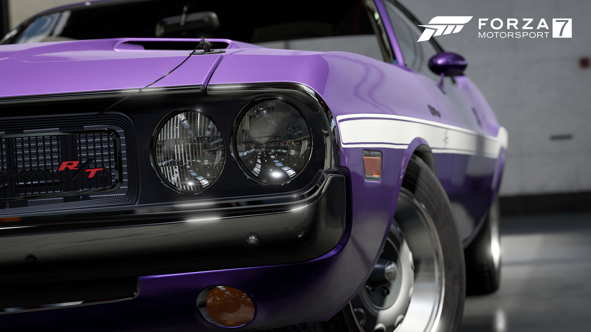

Forza Motorsport 7
Forza Motorsport 7 is a racing video game developed by Turn 10 Studios and published by Microsoft Studios, serving as the tenth installment in the Forza series. It was released on Microsoft Windows and Xbox One on October 3, 2017, with early access to those who have pre-ordered the game's Ultimate edition.
Forza Motorsport 7 was developed by Turn 10 Studios alongside the Xbox One X console, with Turn 10 providing the Xbox hardware team with feedback. In mid-January 2017, the Xbox hardware team supplied Turn 10 with a prototype Xbox One X system. Turn 10 was able to get their ForzaTech demo running on the system within two days after receiving the prototype console. The game will run at 4K resolution and 60 frames per second, while running at 1080p at similar frame rate on the base Xbox One models.
The game will not feature any Toyota production road cars due to licensing issues. Only the company's race cars (including NASCAR's), the Arctic Trucks Hilux and the Subaru BRZ will be featured.
Wolfenstein 2

Wolfenstein II: The New Colossus is an upcoming first-person shooter action-adventure video game developed by MachineGames and published by Bethesda Softworks. It will be released on 27 October 2017 for Microsoft Windows, PlayStation 4, and Xbox One, and in 2018 for Nintendo Switch. The game is the eighth main entry in the Wolfenstein series and the sequel to 2014's Wolfenstein: The New Order. It follows the events of the previous game, where the Nazis won the Second World War and the Kreisau Circle managed to stop William "B.J." Blazkowicz's nemesis General Wilhelm "Deathshead" Strasse. The game is set in 1961, in Nazi occupied America, where B.J. and the militant American resistance are trying to set up a Second American Revolution against the Nazi regime.
The Witcher 3: Wild Hunt

The Witcher 3: Wild Hunt is a 2015 action role-playing video game developed by CD Projekt RED and published by CD Projekt. Based on The Witcher series of fantasy novels by Polish author Andrzej Sapkowski, it is the sequel to the 2011 video game The Witcher 2: Assassins of Kings and the third installment in The Witcher video game series. Played in an open world with a third-person perspective, players control protagonist Geralt of Rivia, a monster hunter known as a Witcher, who seeks to find his missing adopted daughter on the run from the Wild Hunt, an otherworldly force determined to capture and use her powers. Throughout the game, players battle against the world's many dangers using weapons and magic, interact with various non-player characters, and complete main story quests and side quests to acquire experience points and gold used to increase Geralt's various abilities and gear. The game's central story features multiple endings that are determined by Geralt's choices made by the player during certain points of the story.
DOOM

Doom is a first-person shooter video game developed by id Software and published by Bethesda Softworks. A reboot of the Doom franchise, it is the fourth title in the main series and the first major installment since Doom 3 in 2004. It was released worldwide on Microsoft Windows, PlayStation 4, and Xbox One on May 13, 2016 and is powered by id Tech 6. A port for Nintendo Switch developed by Panic Button is scheduled for release in Q4 2017.
Players take the role of an unnamed marine as he battles demonic forces from Hell that have been unleashed by the Union Aerospace Corporation on a future-set colonized planet Mars. The gameplay returns to a faster pace with more open-ended levels, closer to the first two games than the slower survival horror approach of Doom 3. It also features environment traversal, character upgrades, and the ability to perform executions known as "glory kills". The game also supports an online multiplayer component and a level editor known as "SnapMap", co-developed with Certain Affinity and Escalation Studios respectively.
Doom was announced as Doom 4 in 2008, but underwent an extensive development cycle with different builds and designs before being restarted in 2011, and revealed as simply Doom in 2014. It was tested by customers who pre-ordered the Bethesda game Wolfenstein: The New Order, and also by the general public. Mick Gordon composed the music for the game, with additional music contributed by Ben F. Carney, Chris Hite, and Chad Mossholder.